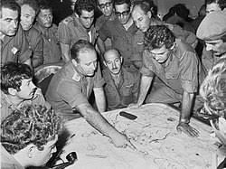

רקע כללי
מלחמת יום הכיפורים פרצה ב-6 באוקטובר 1973, כאשר צבאות מצרים וסוריה תקפו את ישראל בהפתעה ביום הקדוש ביותר בלוח השנה היהודי. המתקפה הפתאומית הייתה מתוכננת היטב ותואמה מראש, כשמטרתן של המדינות התוקפות הייתה להחזיר שטחים שאבדו במלחמת ששת הימים ולהחזיר את כבודן הלאומי.
המתקפה החלה בצליחת תעלת סואץ ובתקיפת רמת הגולן, שם נכנסו כוחות גדולים של טנקים, תותחים וחיילים. הכוחות הישראליים נאלצו להתמודד עם מתקפה רחבת היקף ולשמור על קווי ההגנה תוך אובדן כבד בנפש ובציוד צבאי.
מלחמת יום הכיפורים
אתר המוקדש לזיכרון המלחמה של שנת 1973
רקע כללי
מלחמת יום הכיפורים פרצה ב-6 באוקטובר 1973, כאשר צבאות מצרים וסוריה תקפו את ישראל בהפתעה ביום הקדוש ביותר בלוח השנה היהודי. המתקפה הפתאומית הייתה מתוכננת היטב ותואמה מראש, כשמטרתן של המדינות התוקפות הייתה להחזיר שטחים שאבדו במלחמת ששת הימים ולהחזיר את כבודן הלאומי.
המתקפה החלה בצליחת תעלת סואץ ובתקיפת רמת הגולן, שם נכנסו כוחות גדולים של טנקים, תותחים וחיילים. הכוחות הישראליים נאלצו להתמודד עם מתקפה רחבת היקף ולשמור על קווי ההגנה תוך אובדן כבד בנפש ובציוד צבאי.
לאורך השבועות הבאים ניהלו צבאות ישראל קרבות עזים בגבולות סוריה ומצרים, תוך ביצוע פעולות נועזות כגון חציית תעלת סואץ על ידי צה"ל וכניסה עמוקה לתוך שטחי מצרים וסוריה. לבסוף, המלחמה הסתיימה לאחר מאמצים מדיניים שהובילו להפסקת אש ב-25 באוקטובר 1973.
קרבות מרכזיים
חזית הדרום - סיני
בדרום, הקרב התרכז בחצי האי סיני, שם צבא מצרים החל במבצע "באדר" שכלל צליחת תעלת סואץ והקמת גשרים צבאיים. המצרים הצליחו לשבור את קו בר-לב ולהתקדם, דבר שגרם למכה פסיכולוגית עמוקה בישראל. תגובות הצבא הישראלי התעכבו, והקרבות באזור היו קשים במיוחד.
כוחות צה"ל הצליחו לבסוף לבלום את ההתקדמות המצרית, ולאחר מכן עברו למתקפה, חצו את תעלת סואץ וכיתרו חלק מהכוחות המצריים. הפעולה הזו הפכה לנקודת מפנה בחזית הדרום.

חזית הצפון - רמת הגולן
בצפון, צבא סוריה פתח בהתקפה מאסיבית על רמת הגולן, בניסיון לכבוש את הרמה שהייתה בידיים ישראליות מאז 1967. כוחות ישראלים מצומצמים נלחמו מול מספר גדול של טנקים וחיילים סוריים, ובימים הראשונים היה נדמה שהסורים עומדים לכבוש את הרמה.
לאחר קרבות קשים, שהובילו לאובדן גדול בנפש ובציוד, הצליחו כוחות צה"ל לא רק לבלום את ההתקפה הסורית אלא גם לדחוק את הכוחות הסוריים חזרה אל מעבר לקווים המקוריים ואף לתוך שטחי סוריה.

תוצאות והשפעות
מלחמת יום הכיפורים הובילה לאובדן עצום בנפש ובנזק כלכלי כבד. בחברה הישראלית חלה זעזוע, ושאלות קשות עלו בנוגע לאופן שבו נוהלו ההכנות הצבאיות והמודיעיניות. הציבור והמערכת הצבאית דרשו תשובות לשאלות על התנהלות הצבא והממשלה, מה שהוביל להקמת ועדת אגרנט שחקרה את המחדלים שנעשו.
המלחמה גם השפיעה על התודעה הלאומית, וחיזקה את ההבנה שהשלום עם מדינות ערב הוא מטרה אסטרטגית. לאחר מספר שנים, בעקבות תהליכים מדיניים שהחלו לאחר המלחמה, נחתם הסכם השלום עם מצרים בשנת 1979, בו הוחזר חצי האי סיני למצרים בתמורה להכרה וליחסים דיפלומטיים.

כמו כן, המלחמה הובילה לשינויים במבנה הצבא ובתפיסה הביטחונית של ישראל, תוך הקפדה על מוכנות גבוהה ותגבור המודיעין. היא נחשבת לנקודת מפנה היסטורית עבור מדינת ישראל וצה"ל.
המורשת והזיכרון
מלחמת יום הכיפורים השאירה חותם עמוק בזיכרון הקולקטיבי של החברה הישראלית. במהלך השנים נערכים טקסי זיכרון ברחבי הארץ, וחיילים שנפלו בקרבות מונצחים באנדרטאות ואתרי הנצחה.
המלחמה זכתה גם לביטוי רחב בספרות, בשירה ובקולנוע, כחלק מהניסיון להתמודד עם ההשפעות הרגשיות והחברתיות שלה. ספרים רבים נכתבו על המלחמה, ותיאורים של חוויות החיילים במהלך הקרבות משמשים עדות חיה לתחושות הקשות של אותם ימים.

האתר הזה מוקדש לזיכרון הנופלים ולזכר המלחמה, כחלק מהמאמץ להנציח את מורשתם של אלו שנלחמו והגנו על המדינה.